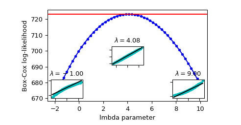
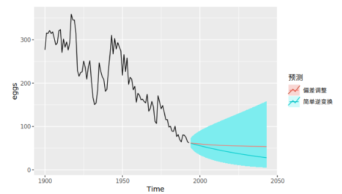

1. 特征工程
首先来说说这几个术语：
特征工程：利用数据领域的相关知识来创建能够使机器学习算法达到最佳性能的特征的过程。
特征构建 ：是原始数据中人工的构建新的特征。
特征提取 ：自动地构建新的特征，将原始特征转换为一组具有明显物理意义或者统计意义或核的特征。
特征选择 ：从特征集合中挑选一组最具统计意义的特征子集，从而达到降维的效果。
了解这几个术语的意思后，我们来看看他们之间的关系。
在Quora中有人这么说：
Feature engineering is a super-set of activities which include feature extraction, feature construction and feature selection. Each of the three are important steps and none should be ignored. We could make a generalization of the importance though, from my experience the relative importance of the steps would be feature construction > feature extraction > feature selection.
用中文来说就是：特征工程是一个超集，它包括特征提取、特征构建和特征选择这三个子模块。在实践当中，每一个子模块都非常重要，忽略不得。根据答主的经验，他将这三个子模块的重要性进行了一个排名，即：
$$特征构建>特征提取>特征选择$$
事实上，真的是这样，如果特征构建做的不好，那么它会直接影响特征提取，进而影响了特征选择，最终影响模型的性能。
有这么一句话在业界广泛流传，数据和特征决定了机器学习的上限，而模型和算法只是逼近这个上限而已。那特征工程到底是什么呢？顾名思义，其本质是一项工程活动，目的是最大限度地从原始数据中提取特征以供算法和模型使用。
特征工程主要分为三部分：
1. 数据预处理
对应的sklearn包：sklearn-Processing data
2. 特征选择
对应的sklearn包： sklearn-Feature selection
3. 降维
对应的sklearn包： sklearn-Dimensionality reduction
2. 数据预处理
通过特征提取，我们能得到未经处理的特征，这时的特征可能有以下问题：
- 不属于同一量纲：即特征的规格不一样，不能够放在一起比较。无量纲化可以解决这一问题。
- 信息冗余：对于某些定量特征，其包含的有效信息为区间划分，例如学习成绩，假若只关心“及格”或不“及格”，那么需要将定量的考分，转换成“1”和“0”表示及格和未及格。二值化可以解决这一问题。
- 定性特征不能直接使用：通常使用哑编码的方式将定性特征转换为定量特征，假设有N种定性值，则将这一个特征扩展为N种特征，当原始特征值为第i种定性值时，第i个扩展特征赋值为1，其他扩展特征赋值为0。哑编码的方式相比直接指定的方式，不用增加调参的工作，对于线性模型来说，使用哑编码后的特征可达到非线性的效果。
- 存在缺失值：填充缺失值。
- 信息利用率低：不同的机器学习算法和模型对数据中信息的利用是不同的，之前提到在线性模型中，使用对定性特征哑编码可以达到非线性的效果。类似地，对定量变量多项式化，或者进行其他的数据变换，都能达到非线性的效果。
我们使用sklearn中的preproccessing库来进行数据预处理。
2.1. 无量纲化
无量纲化使不同规格的数据转换到同一规格
2.1.1. 标准化 （对列向量处理）
标准化也叫Z-score standardization，是将服从正态分布的特征值转换成标准正态分布的过程。
标准化需要计算特征的均值和标准差，公式表达为：
$$x=\frac{x-X}{S}$$
from sklearn.preprocessing import StandardScaler #标准化，返回值为标准化后的数据 StandardScaler().fit_transform(iris.data)
2.1.2. 区间缩放（对列向量处理）
区间缩放法的思路有多种，常见的一种为利用两个最值进行缩放，公式表达为：
$$x^{'}=\frac{x-Min}{Max-Min}$$
使用preproccessing库的MinMaxScaler类对数据进行区间缩放的代码如下：
from sklearn.datasets import load_iris from sklearn.preprocessing import MinMaxScaler #区间缩放，返回值为缩放到[0, 1]区间的数据 iris=load_iris() MinMaxScaler().fit_transform(iris.data)
在什么时候使用标准化比较好，什么时候区间缩放比较好呢？
1. 在后续的分类、聚类算法中，需要使用距离来度量相似性的时候、或者使用PCA、LDA这些需要用到协方差分析进行降维的时候，同时数据分布可以近似为正太分布，标准化方法(Z-score standardization)表现更好。
- 在不涉及距离度量、协方差计算、数据不符合正太分布的时候，可以使用区间缩放法或其他归一化方法。比如图像处理中，将RGB图像转换为灰度图像后将其值限定在[0,255]的范围。
2.1.3. 归一化（对行向量处理）
归一化目的在于样本向量在点乘运算或其他核函数计算相似性时，拥有统一的标准，也就是说都转化为“单位向量”。规则为l2的归一化公式如下：
$$x^{'}=\frac{x}{\sqrt{\sum_j^m·x_{j}^2}}$$
使用preproccessing库的Normalizer类对数据进行归一化的代码如下：
from sklearn.preprocessing import Normalizer # 归一化，返回值为归一化后的数据 Normalizer().fit_transform(iris.data)
分箱
from sklearn.preprocessing import KBinsDiscretizer KBinsDiscretizer(n_bins=5, encode='onehot', strategy='quantile')
2.2. 对定量特征二值化（对列向量处理）
定性与定量区别
定性：博主很胖，博主很瘦
定量：博主有80kg，博主有60kg
一般定性都会有相关的描述词，定量的描述都是可以用数字来量化处理定量特征二值化的核心在于设定一个阈值，大于阈值的赋值为1，小于等于阈值的赋值为0，公式表达如下：
$$x=\begin{cases}1,x>threshold\0,x<=threshold \end{cases}$$
使用preproccessing库的Binarizer类对数据进行二值化的代码如下：
from sklearn.preprocessing import Binarizer #二值化，阈值设置为3，返回值为二值化后的数据 Binarizer(threshold=3).fit_transform(iris.data)
2.3. 对定性特征哑编码（对列向量处理）
使用preproccessing库的OneHotEncoder类对数据进行哑编码的代码如下：
from sklearn.preprocessing import OneHotEncoder #哑编码，对IRIS数据集的目标值，返回值为哑编码后的数据 OneHotEncoder().fit_transform(iris.target.reshape((-1,1)))
2.4. 对IDs类特征数字化编码（对列向量处理）
import pandas as pd #哑编码，对IRIS数据集的目标值，返回值为哑编码后的数据 cat_id_series=pd.Categorical(df["User_id"]) cat_id_series >>> ["Tom", "Tony","Tom",...] type(cat_id_series) >>> pandas.core.arrays.categorical.Categorical cat_id_series.codes >>> array([1,2,..]) cat_id_series.categories >>> ["Tom", "Tony",...] 而pd.Categorical()独立创建categorical数据时有两个新的特性，一是其通过参数categories定义类别时，若原数据中出现了categories参数中没有的数据，则会自动转换为pd.nan： categorical_ = pd.Categorical(['A','B','D','C'], categories=['B','C','D']) categorical_ >>> [NaN, B, D, C] Categories (3, object): [B, C, D] categorical_.codes >>> array([-1, 0, 2, 1], dtype=int8)
2.5. 缺失值计算（对列向量处理）
使用preproccessing库的Imputer类对数据进行缺失值计算的代码如下：
from numpy import vstack, array, nan from sklearn.preprocessing import Imputer #缺失值计算，返回值为计算缺失值后的数据 #参数missing_value为缺失值的表示形式，默认为NaN #参数strategy为缺失值填充方式，默认为mean（均值） Imputer().fit_transform(vstack((array([nan, nan, nan, nan]), iris.data)))
2.6. 数据变换
2.6.1. 随机变量分布描述及调整
2.6.1.1. 偏度
偏度（Skewness）是描述数据分布形态的统计量，其描述的是某总体取值分布的对称性，简单来说就是数据的不对称程度。
import pandas as pd df.skew() >>> V0 -1.275220 V1 -1.637059 V2 -0.300040 V3 -0.352699 V4 -1.023120
偏度是三阶中心距计算出来的。
（1）Skewness = 0 ，分布形态与正态分布偏度相同。
（2）Skewness > 0 ，正偏差数值较大，为正偏或右偏。长尾巴拖在右边，数据右端有较多的极端值。
（3）Skewness < 0 ，负偏差数值较大，为负偏或左偏。长尾巴拖在左边，数据左端有较多的极端值。
（4）数值的绝对值越大，表明数据分布越不对称，偏斜程度大。
计算公式：
$$Skewness=E[(\frac{x-E(x)}{\sqrt{D(x)}})^3]$$
$Skewness$越大，分布形态偏移程度越大。
| 方法 | 数学运算 | 适合于: | 不适合于 |
|---|---|---|---|
| 取对数 | ln(x)log10(x) | 右偏态数据 | 零值 |
| 平方根 | √x | 右偏态数据 | 负数 |
| 平方 | $x^2$ | 左偏态数据 | 负数 |
| 立方根 | $x^ | 右偏态数据 | 负数 |
| 取倒数 | 1/x | 使小值变大，大值变小 | 零值\负数 |
2.6.1.2. 峰度
峰度是描述某变量所有取值分布形态陡缓程度的统计量，简单来说就是数据分布顶的尖锐程度。
峰度是四阶标准矩计算出来的。
（1）Kurtosis=0 与正态分布的陡缓程度相同。
（2）Kurtosis>0 比正态分布的高峰更加陡峭——尖顶峰
（3）Kurtosis<0 比正态分布的高峰来得平台——平顶峰
计算公式：
$$Kurtosis=E[ (\frac{x-E(x)}{\sqrt(D(x)})^4]-3$$
import pandas as pd df.kurt()
2.6.2. 多项式变换（对行向量处理）
常见的数据变换有基于多项式的、基于指数函数的、基于对数函数的。4个特征，度为2的多项式转换公式如下：

使用preproccessing库的PolynomialFeatures类对数据进行多项式转换的代码如下：
from sklearn.preprocessing import PolynomialFeatures #多项式转换 #参数degree为度，默认值为2 PolynomialFeatures().fit_transform(iris.data)
2.6.3. 自定义变换
基于单变元函数的数据变换可以使用一个统一的方式完成，使用preproccessing库的FunctionTransformer对数据进行对数函数转换的代码如下：
from numpy import log1p from sklearn.preprocessing import FunctionTransformer #自定义转换函数为对数函数的数据变换 #第一个参数是单变元函数 FunctionTransformer(log1p).fit_transform(iris.data)
2.6.4. Box-cox变换
2.6.4.1. 标准 Box-cox 变换
$$w_t =
\begin{cases}
\frac{x_t^\lambda-1}{\lambda}& \lambda!=0\
\ln{x_t}& \lambda==0
\end{cases}$$
box1p
$$w_t =
\begin{cases}
\frac{(x_t+1)^\lambda-1}{\lambda}& \lambda!=0\
\ln{(x_t+1)}& \lambda==0
\end{cases}$$
from scipy import stats x = np.random.uniform(0, 1, 1000) x_norm = stats.boxcox(x,lmbda=0.1)
2.6.4.2. 参数lmbda 确定
参数lmbda 确定 总体上依据参数估计的方法进行，
1. 最大释然估计(log-likelihood function,llf)
Box-cox 变换 中参数lmbda $\lambda$的确定方法
$$llf=(\lambda-1)\sum_i(\log{(x_i)})-\frac{N}{2}log(\frac{\sum_i(y_i-y)^2}{N})$$
其中Y是X的Box-cox 变换后的序列
x_norm, maxlog, = stats.boxcox(x,lmbda=None, alpha=None) # alpha: 执行区间因子0.90，90% # lmbda: Box-cox # maxlog: log似然函数的最大值 maxlog >>> 0.69 x_norm = stats.boxcox(x,lmbda=maxlog)

依据上图 确定 maxlog=4.08
- 依据最大皮尔森相关系数估计
如果X符合正态分布，则y = boxcox(x,lmbda)，求得到最大化np.corr(y,x)时候的lmbda
maxlog=scipy.stats.boxcox_normmax(x,method="pearsonr")
2.6.4.3. Box-cox逆变换
$$x_t =
\begin{cases}
e^{w_t}& \lambda==0\
(\lambda w_t +1)^{\frac{1}{\lambda}} & \lambda!=0
\end{cases}$$
scipy.special.inv_boxcox(y, lmbda)
Box-cox 逆变换 处理数据偏执
$$x_t =
\begin{cases}
e^{w_t}[1+\frac{\sigma^2_h}{2}]& \lambda==0\
(\lambda w_t +1)^{\frac{1}{\lambda}} [1+\frac{\sigma^2_h(1-\lambda)}{2(\lambda w_t+1)^2}]& \lambda!=0
\end{cases}$$
##没有现成的，只能自己写 #Function def invboxcox(y,ld): if ld == 0: return(np.exp(y)) else: return(np.exp(np.log(ld*y+1)/ld)) # Test the code x=[100] ld = 0 y = stats.boxcox(x,ld) print invboxcox(y[0],ld)

2.7. 异常值与重复数据检测
2.7.1. 异常值检验的目的
找出数据集中和大多数数据不同的数据
2.7.2. 异常值检验的主要方法
异常值检验主要方法有3种：
| 类型 | 详解 | 示例 |
|---|---|---|
| 基于统计学的方法 | 这种方法一般会构建一个概率分布模型，并计算对象符合该模型的概率，把具有低概率的对象视为异常点 | 特征工程中的RobustScaler方法 |
| 基于聚类方法 | 基于数据特征的分布来做的 | BIRCH聚类算法原理、DBSCAN密度聚类 |
| novelty detection | 当训练数据中没有离群点，我们的目标是用训练好的模型去检测另外新发现的样本 | OneClassSVM |
| outlier detection | 当训练数据中包含离群点，模型训练时要匹配训练数据的中心样本，忽视训练样本中的其它异常点 | Isolation Forest(低维度)、Local Outlier Factor（中高纬度） |
2.7.2.1. RobustScaler
https://scikit-learn.org/stable/modules/generated/sklearn.preprocessing.robust_scale.html
对数据集进行升序排列，取数据集中间 quantile_range 范围的数据
sklearn.preprocessing.robust_scale(X, axis=0, with_centering=True, with_scaling=True, quantile_range=(25.0, 75.0), copy=True
2.7.2.2. OneClassSVM
http://scikit-learn.org/stable/auto_examples/svm/plot_oneclass.html
- 属于支持向量机大家族
- 无监督学习的方法
支持向量机的边界（支持向量） 一边为无穷远，一边为球的外边缘，求最大间隔。间隔外的数据为异常值 ，间隔内的数据为正常值
在sklearn中，我们可以用svm包里面的OneClassSVM来做异常点检测。OneClassSVM也支持核函数，所以普通SVM里面的调参思路在这里也适用。
2.7.2.3. Isolation Forest
- 集成学习的思路
- 随机森林大家族的一员
- 周志华老师的学生提出
- 不适用于特别高维的数据
- 它具有线性时间复杂度
- 快速分到了叶子节点的数据 判定为 异常值
简介：
孤立森林（Isolation Forest）是另外一种高效的异常检测算法，它和随机森林类似，但每次选择划分属性和划分点（值）时都是随机的，而不是根据信息增益或者基尼指数来选择。在建树过程中，如果一些样本很快就到达了叶子节点（即叶子到根的距离d很短），那么就被认为很有可能是异常点。因为那些路径d比较短的样本，都是因为距离主要的样本点分布中心比较远的。也就是说，可以通过计算样本在所有树中的平均路径长度来寻找异常点。
示例：
sklearn.ensemble.IsolationForest(n_estimators=100, max_samples=’auto’, contamination=0.1, max_features=1.0, bootstrap=False, n_jobs=1, random_state=None, verbose=0)
参数：
- n_estimators: int, optional (default=100)森林中树的颗数
- max_samples: int or float, optional (default=”auto”)对每棵树，样本个数或比例
- contamination: float in (0., 0.5), optional (default=0.1) 这是最关键的参数，用户设置样本中异常点的比例
- max_features: int or float, optional (default=1.0) 对每棵树，特征个数或比例
函数：
fit(X)
Fit estimator.（无监督）
predict(X)
返回值：+1 表示正常样本， -1表示异常样本。
decision_function(X)
返回样本的异常评分。 值越小表示越有可能是异常样本。
2.7.2.4. 局部异常因子算法 LOF
- 中等高维数据集上执行异常值检测
- 基于密度的算法
算法简介：
https://blog.csdn.net/bbbeoy/article/details/80301211
了解了 LOF 的定义，整个算法也就显而易见了：
1. 对于每个数据点，计算它与其它所有点的距离，并按从近到远排序；
2. 对于每个数据点，找到它的 k-nearest-neighbor，计算 LOF 得分。
-
K-邻近距离（k-distance）
k-distance (o)
在距离数据点 o 最近的几个点中，第 k 个最近的点跟点 O 之间的距离称为点 p 的 K-邻近距离，记为k-distance (o) -
可达距离（rechability distance）
reach_dist_k
可达距离的定义跟K-邻近距离是相关的，给定参数k时， 数据点 p 到 数据点 o 的可达距离 reach-dist（p, o）为数据点 o 的K-邻近距离 和 数据点p与点o之间的直接距离的最大值。
$$reach_dist_k(p,o)=max{k_distance(o),d(p,o)}$$
- 局部可达密度（local rechability density）：
数据点 p 的局部可达密度为它与邻近的数据点的平均可达距离的倒数，即：
$$lrd_k(p)=\frac{1}{\frac{\sum_{o\in{N_{k}(p)}}reach_dist_k(p,o)}{|N_k(p)|}}$$
局部异常因子（local outlier factor）：根据局部可达密度的定义，如果一个数据点跟其他点比较疏远的话，那么显然它的局部可达密度就小。但LOF算法衡量一个数据点的异常程度，并不是看它的绝对局部密度，而是看它跟周围邻近的数据点的相对密度。这样做的好处是可以允许数据分布不均匀、密度不同的情况。局部异常因子即是用局部相对密度来定义的。数据点 p 的局部相对密度（局部异常因子）为点p的邻居们的平均局部可达密度跟数据点p的局部可达密度的比值，即：
$$LOF_{k}(p)=\frac{\sum_{o\in{N_k(p)}}\frac{lrd(o)}{lrd(p)}}{|N_{k}(p)|}=\frac{\sum_{o\in{N_{k}(p)}}lrd(o)}{|N_{k}(p)|}/lrd(p)$$
根据局部异常因子的定义，如果数据点 p 的 LOF 得分在1附近，表明数据点p的局部密度跟它的邻居们差不多；如果数据点 p 的 LOF 得分小于1，表明数据点p处在一个相对密集的区域，不像是一个异常点；如果数据点 p 的 LOF 得分远大于1，表明数据点p跟其他点比较疏远，很有可能是一个异常点。下面这个图来自 Wikipedia 的 LOF 词条，展示了一个二维的例子。上面的数字标明了相应点的LOF得分，可以让人对LOF有一个直观的印象。
Local Outlier Factor主要参数和函数介绍
sklearn.neighbors.LocalOutlierFactor(n_neighbors=20, algorithm=’auto’, leaf_size=30, metric=’minkowski’, p=2, metric_params=None, contamination=0.1, n_jobs=1)
1）主要参数
- n_neighbors : 设置k，default=20
- contamination :设置样本中异常点的比例，default=0.1
2）主要属性：
- negative_outlier_factor_ : numpy array, shape (n_samples,)和LOF相反的值，值越小，越有可能是异常点。（注：上面提到LOF的值越接近1，越可能是正常样本，LOF的值越大于1，则越可能是异常样本）。这里就正好反一下。
3）主要函数：
1. fit_predict(X)
X : array-like, shape (n_samples, n_features)
2.8. 总结
| 类 | 功能 | 说明 |
|---|---|---|
| StandardScaler | 无量纲化 | 标准化，基于特征矩阵的列，将特征值转换至服从标准正态分布 |
| MinMaxScaler | 无量纲化 | 区间缩放，基于最大最小值，将特征值转换到[0, 1]区间上 |
| Normalizer | 归一化 | 基于特征矩阵的行，将样本向量转换为“单位向量” |
| Binarizer | 二值化 | 基于给定阈值，将定量特征按阈值划分 |
| OneHotEncoder | 哑编码 | 将定性数据编码为定量数据 |
| Imputer | 缺失值计算 | 计算缺失值，缺失值可填充为均值等 |
| PolynomialFeatures | 多项式数据转换 | 多项式数据转换 |
| FunctionTransformer | 自定义单元数据转换 | 使用单变元的函数来转换数据 |
3. 特征选择
当数据预处理完成后，我们需要选择有意义的特征输入机器学习的算法和模型进行训练。通常来说，从两个方面考虑来选择特征：
- 特征是否发散：如果一个特征不发散，例如方差接近于0，也就是说样本在这个特征上基本上没有差异，这个特征对于样本的区分并没有什么用。
- 特征与目标的相关性：这点比较显见，与目标相关性高的特征，应当优选选择。除方差法外，本文介绍的其他方法均从相关性考虑。
根据特征选择的形式又可以将特征选择方法分为3种：
- Filter：过滤法，不用考虑后续学习器，按照发散性或者相关性对各个特征进行评分，设定阈值或者待选择阈值的个数，选择特征。
- Wrapper：包装法，需考虑后续学习器，根据目标函数（通常是预测效果评分），每次选择若干特征，或者排除若干特征。
- Embedded：嵌入法，是Filter与Wrapper方法的结合。先使用某些机器学习的算法和模型进行训练，得到各个特征的权值系数，根据系数从大到小选择特征。
我们使用sklearn中的sklearn.feature_selection库来进行特征选择。
3.1. Filter
3.1.1. 依据单特征自身统计性质
3.1.1.1. 方差选择法
使用方差选择法，先要计算各个特征的方差（自身方差），然后根据阈值，选择方差大于阈值的特征。使用feature_selection库的VarianceThreshold类来选择特征的代码如下：
from sklearn.feature_selection import VarianceThreshold #方差选择法，返回值为特征选择后的数据 #参数threshold为方差的阈值 select_array=VarianceThreshold(threshold=3).fit_transform(data_array) # 如果需要datafram 的 name def variance_threshold_selector(df,threshold=0.5): selector = VarianceThreshold(threshold) selector.fit(df) return df.loc[:,df.columns[selector.get_support(indices=True)]]
例如，假设我们有一个特征是布尔值的数据集，我们想要移除那些在整个数据集中特征值为0或者为1的比例超过80%的特征。布尔特征是伯努利（Bernoulli）随机变量，变量的方差为
$${Var}_{[X]} = p(1 - p)$$
因此，我们可以使用阈值 0.8*(1-0.8)进行选择
依据多特征之间统计性质
import seaborn as sns import pandas as pd # 皮尔森相关系数 df.corr() #绘图 sns.heatmap(df.corr())
3.1.2. 依据特征-目标相关性
可以使用的工具
- sklearn.feature_selection.SelectKBest(score_func, k) 移除那些除了评分最高的 K 个特征之外的所有特征
- sklearn.feature_selection.SelectPercentile(score_func, percentile) 移除除了用户指定的最高得分百分比percentile之外的所有特征
使用的特征相关性评价指标：
- 对于回归: f_regression （F值） , mutual_info_regression（互信息）
- 对于分类: chi2（卡方检验） , f_classif （F值）, mutual_info_classif（互信息）
3.1.2.1. 卡方检验--分类
from sklearn.feature_selection import SelectKBest from sklearn.feature_selection import chi2 # SelectKBest(score_func, k) #选择K个最好的特征，返回选择特征后的数据 SelectKBest(chi2, k=2).fit_transform(iris.data, iris.target)
3.1.2.2. F检验--分类、回归
基于 F-test 的方法计算两个随机变量（feature,target）之间的线性相关程度
ANOVA-F 值越大，那么特征对因变量y的预测能力就越强，就越重要！
from sklearn.feature_selection import SelectKBest from sklearn.feature_selection import f_classif,f_regression # SelectKBest(score_func, k) #选择K个最好的特征，返回选择特征后的数据 SelectKBest(f_classif, k=2).fit_transform(iris.data, iris.target)
3.1.2.3. 互信息--分类、回归
mutual information methods（互信息）能够计算任何种类的统计相关性，但是作为非参数的方法，互信息需要更多的样本来进行准确的估计
from sklearn.feature_selection import SelectKBest from sklearn.feature_selection import mutual_info_classif,mutual_info_regression # SelectKBest(score_func, k) #选择K个最好的特征，返回选择特征后的数据 SelectKBest(mutual_info_regression, k=2).fit_transform(iris.data, iris.target)
3.2. Wrapper
3.2.1. 递归特征消除法
递归消除特征法使用一个基模型来进行多轮训练，每轮训练后，消除若干权值系数的特征，再基于新的特征集进行下一轮训练。使用feature_selection库的RFE类来选择特征的代码如下：
from sklearn.feature_selection import RFE from sklearn.linear_model import LogisticRegression #递归特征消除法，返回特征选择后的数据 #参数estimator为基模型 #参数n_features_to_select为选择的特征个数 RFE(estimator=LogisticRegression(), n_features_to_select=2).fit_transform(iris.data, iris.target)
3.3. Embedded
3.3.1. 基于惩罚项的特征选择法
使用带惩罚项的基模型，除了筛选出特征外，同时也进行了降维。使用feature_selection库的SelectFromModel类结合带L1惩罚项的逻辑回归模型，来选择特征的代码如下：
from sklearn.feature_selection import SelectFromModel from sklearn.linear_model import LogisticRegression #带L1惩罚项的逻辑回归作为基模型的特征选择 SelectFromModel(LogisticRegression(penalty="l1", C=0.1)).fit_transform(iris.data, iris.target)
3.3.2. 基于树模型的特征选择法
树模型中GBDT可用来作为基模型进行特征选择，使用feature_selection库的SelectFromModel类结合GBDT模型，来选择特征的代码如下：
from sklearn.feature_selection import SelectFromModel from sklearn.ensemble import GradientBoostingClassifier #GBDT作为基模型的特征选择 SelectFromModel(GradientBoostingClassifier()).fit_transform(iris.data, iris.target)
3.4. 特征重要性
3.4.1. 利用SHAP解释Xgboost模型
Xgboost相对于线性模型在进行预测时往往有更好的精度，但是同时也失去了线性模型的可解释性。所以Xgboost通常被认为是黑箱模型。
2017年，Lundberg和Lee的论文提出了SHAP值这一广泛适用的方法用来解释各种模型（分类以及回归），其中最大的受益者莫过于之前难以被理解的黑箱模型，如boosting和神经网络模型。
本教程中，我们在真实数据集上进行实操，利用SHAP来解释Xgboost模型。
本教程基于Python 3.6版本、Xgboost 0.82版本以及shap 0.28.5版本。
原创者：东布东 | 修改校对：SofaSofa TeamM |
1. Feature importance
在SHAP被广泛使用之前，我们通常用feature importance或者partial dependence plot来解释xgboost。 feature importance是用来衡量数据集中每个特征的重要性。
简单来说，每个特征对于提升整个模型的预测能力的贡献程度就是特征的重要性。（拓展阅读：随机森林、xgboost中feature importance，Partial Dependence Plot是什么意思？，怎么利用permutation importance来解释xgboost模型）
Feature importance可以直观地反映出特征的重要性，看出哪些特征对最终的模型影响较大。但是无法判断特征与最终预测结果的关系是如何的。
下面这个例子中，我们用2018年足球球员身价数据（请在SofaSofa数据竞赛页面进行数据下载，下载解压后只需要train.csv这个文件）来具体阐述。
# 加载模块 import xgboost as xgb import pandas as pd import numpy as np import matplotlib.pyplot as plt; plt.style.use('seaborn') # 读取数据，目标变量y是球员的身价（万欧元） data = pd.read_csv('train.csv') # 获得当时球员年龄 today = pd.to_datetime('2018-01-01') data['birth_date'] = pd.to_datetime(data['birth_date']) data['age'] = np.round((today - data['birth_date']).apply(lambda x: x.days) / 365., 1) # 选择特征，这里只是举例，未必是最佳组合 # 特征依次为身高（厘米）、潜力、速度、射门、传球、带球、防守、体格、国际知名度、年龄 cols = ['height_cm', 'potential', 'pac', 'sho', 'pas', 'dri', 'def', 'phy', 'international_reputation', 'age'] # 训练xgboost回归模型 model = xgb.XGBRegressor(max_depth=4, learning_rate=0.05, n_estimators=150) model.fit(data[cols], data['y'].values) # 获取feature importance plt.figure(figsize=(15, 5)) plt.bar(range(len(cols)), model.feature_importances_) plt.xticks(range(len(cols)), cols, rotation=-45, fontsize=14) plt.title('Feature importance', fontsize=14) plt.show()
上图中，我们可以看出国际知名度、潜力和年龄是影响球员身价最重要的三个因素。但是这些因素和身价是正相关、负相关还是其他更复杂的相关性，我们无法从上图得知。我们也无法解读每个特征对每个个体的预测值的影响。
2. SHAP value
SHAP的名称来源于SHapley Additive exPlanation。
Shapley value起源于合作博弈论。比如说甲乙丙丁四个工人一起打工，甲和乙完成了价值100元的工件，甲、乙、丙完成了价值120元的工件，乙、丙、丁完成了价值150元的工件，甲、丁完成了价值90元的工件，那么该如何公平、合理地分配这四个人的工钱呢？Shapley提出了一个合理的计算方法（有兴趣地可以查看原论文），我们称每个参与者分配到的数额为Shapley value。
SHAP是由Shapley value启发的可加性解释模型。对于每个预测样本，模型都产生一个预测值，SHAP value就是该样本中每个特征所分配到的数值。 假设第ii个样本为xixi，第ii个样本的第jj个特征为xi,jxi,j，模型对第ii个样本的预测值为yiyi，整个模型的基线（通常是所有样本的目标变量的均值）为ybaseybase，那么SHAP value服从以下等式。
yi=ybase+f(xi,1)+f(xi,2)+⋯+f(xi,k)yi=ybase+f(xi,1)+f(xi,2)+⋯+f(xi,k)
其中f(xi,1)f(xi,1)为xi,jxi,j的SHAP值。直观上看，f(xi,1)f(xi,1)就是对yiyi的贡献值，当f(xi,1)>0f(xi,1)>0，说明该特征提升了预测值，也正向作用；反之，说明该特征使得预测值降低，有反作用。
很明显可以看出，与上一节中feature importance相比，SHAP value最大的优势是SHAP能对于反映出每一个样本中的特征的影响力，而且还表现出影响的正负性。
3. SHAP的Python实现
Python中SHAP值的计算由shap这个package实现，可以通过pip install shap安装。
下面我们针对第1节中训练出的模型model，计算其SHAP值。
引用package并且获得解释器explainer。
import shap # model是在第1节中训练的模型 explainer = shap.TreeExplainer(model)
获取训练集data各个样本各个特征的SHAP值。
因为data中有10441个样本以及10个特征，我们得到的shap_values的维度是10441×1010441×10。
shap_values = explainer.shap_values(data[cols])
print(shap_values.shape)
(10441, 10)
我们也可以获得在第2节中提到的模型的基线ybaseybase。
通过对比发现，我们可以确认基线值就是训练集的目标变量的拟合值的均值。在这里例子中，目标变量是球员的身价（万欧元），也就是球员的平均身价为229万欧元。
y_base = explainer.expected_value print(y_base) data['pred'] = model.predict(data[cols]) print(data['pred'].mean()) 229.168 229.168
3.1 单个样本的SHAP值
我们可以随机检查其中一位球员身价的预测值以及其特征对预测值的影响。
下面的数据框中第一列是特征名称，第二列是特征的数值，第三列是各个特征在该样本中对应的SHAP值。
# 比如我们挑选数据集中的第30位 j = 30 player_explainer = pd.DataFrame() player_explainer['feature'] = cols player_explainer['feature_value'] = data[cols].iloc[j].values player_explainer['shap_value'] = shap_values[j] player_explainer featurefeature_valueshap_value0height_cm185.00.6245741potential86.01092.6497802pac69.0-2.9642313sho55.0-27.9013924pas68.0-18.3465255dri71.01.2301496def76.0110.8400197phy84.031.1281138international_reputation2.097.1371239age20.7-180.918320
我们知道一个样本中各特征SHAP值的和加上基线值应该等于该样本的预测值。
我们可以做如下的验证。
print('y_base + sum_of_shap_values: %.2f'%(y_base + player_explainer['shap_value'].sum())) print('y_pred: %.2f'%(data['pred'].iloc[j])) y_base + sum_of_shap_values: 1332.65 y_pred: 1332.65
shap还提供极其强大的数据可视化功能。下图是对上面数据框的可视化。
蓝色表示该特征的贡献是负数，红色则表示该特征的贡献是正数。最长的红色条是潜力值，球员的潜力值很高，而他的身价也因此增加了1092万；最长的蓝色条是年龄，这个球员年龄较小才20岁出头，尚未到职业巅峰，未来也有诸多不确定性，身价也因此降低了180万元。
shap.initjs() shap.force_plot(explainer.expected_value, shap_values[j], data[cols].iloc[j])
3.2 对特征的总体分析
除了能对单个样本的SHAP值进行可视化之外，还能对特征进行整体的可视化。
下图中每一行代表一个特征，横坐标为SHAP值。一个点代表一个样本，颜色越红说明特征本身数值越大，颜色越蓝说明特征本身数值越小。
我们可以直观地看出潜力potential是一个很重要的特征，而且基本上是与身价成正相关的。年龄age也会明显影响身价，蓝色点主要集中在SHAP小于0的区域，可见年纪小会降低身价估值，另一方面如果年纪很大，也会降低估值，甚至降低得更明显，因为age这一行最左端的点基本上都是红色的。
shap.summary_plot(shap_values, data[cols])
我们也可以把一个特征对目标变量影响程度的绝对值的均值作为这个特征的重要性。
因为SHAP和feature_importance的计算方法不同，所以我们这里也得到了与第1节不同的重要性排序。
shap.summary_plot(shap_values, data[cols], plot_type="bar")
3.3 部分依赖图Partial Dependence Plot
SHAP也提供了部分依赖图的功能，与传统的部分依赖图不同的是，这里纵坐标不是目标变量y的数值而是SHAP值。
比如下图中，年纪大概呈现出金字塔分布，也就是24到31岁这个年纪对球员的身价是拉抬作用，小于24以及大于31岁的球员身价则会被年纪所累。
shap.dependence_plot('age', shap_values, data[cols], interaction_index=None, show=False)
3.4 对多个变量的交互进行分析
我们也可以多个变量的交互作用进行分析。一种方式是采用summary_plot描绘出散点图，如下：
shap_interaction_values = shap.TreeExplainer(model).shap_interaction_values(data[cols]) shap.summary_plot(shap_interaction_values, data[cols], max_display=4)
我们也可以用dependence_plot描绘两个变量交互下变量对目标值的影响。
shap.dependence_plot('potential', shap_values, data[cols], interaction_index='international_reputation', show=False)
3.5. 总结
| 类 | 所属方式 | 说明 |
|---|---|---|
| VarianceThreshold | Filter | 方差选择法 |
| SelectKBest | Filter | 可选关联系数、卡方校验、最大信息系数作为得分计算的方法 |
| RFE | Wrapper | 递归地训练基模型，将权值系数较小的特征从特征集合中消除 |
| SelectFromModel | Embedded | 训练基模型，选择权值系数较高的特征 |
4. 降维
当特征选择完成后，可以直接训练模型了，但是可能由于特征矩阵过大，导致计算量大，训练时间长的问题，因此降低特征矩阵维度也是必不可少的。常见的降维方法除了以上提到的基于L1惩罚项的模型以外，另外还有主成分分析法（PCA）和线性判别分析（LDA），线性判别分析本身也是一个分类模型。PCA和LDA有很多的相似点，其本质是要将原始的样本映射到维度更低的样本空间中，但是PCA和LDA的映射目标不一样：PCA是为了让映射后的样本具有最大的发散性；而LDA是为了让映射后的样本有最好的分类性能。所以说PCA是一种无监督的降维方法，而LDA是一种有监督的降维方法。
4.1. 主成分分析法（PCA）
使用decomposition库的PCA类选择特征的代码如下：
from sklearn.decomposition import PCA #主成分分析法，返回降维后的数据 #参数n_components为主成分数目 PCA(n_components=2).fit_transform(iris.data)
4.2. 线性判别分析法（LDA）
使用LDA进行降维的代码如下：
from sklearn.discriminant_analysis import LinearDiscriminantAnalysis as LDA #线性判别分析法，返回降维后的数据 #参数n_components为降维后的维数 LDA(n_components=2).fit_transform(iris.data, iris.target)
4.3. 降维总结
| 库 | 类 | 说明 |
|---|---|---|
| decomposition | PCA | 主成分分析法 |
| lda | LDA | 线性判别分析法 |